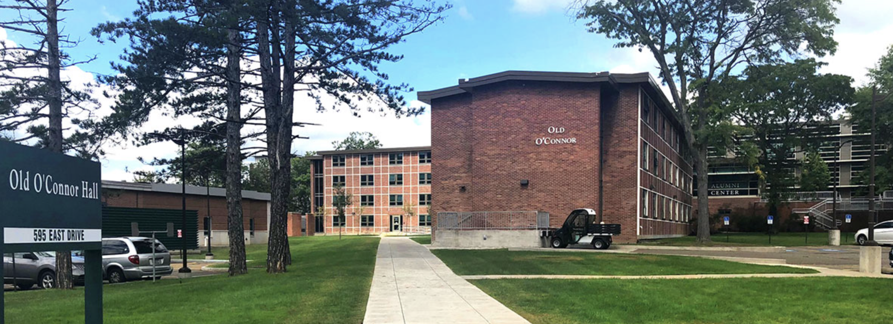
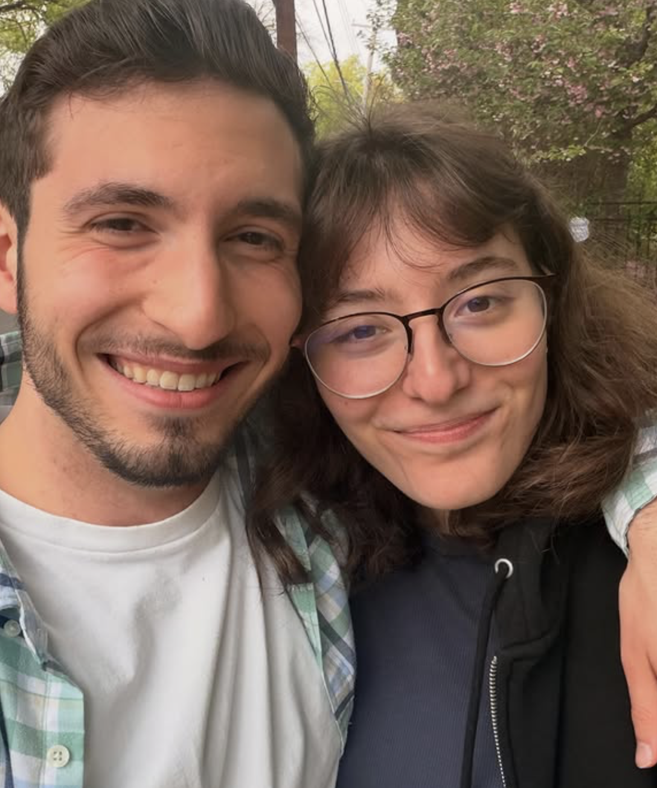
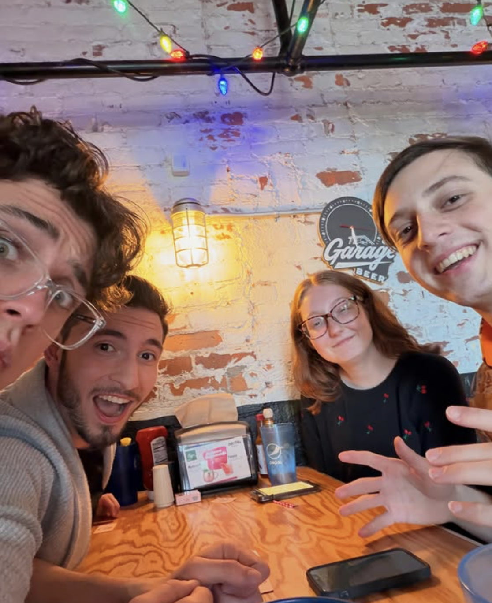
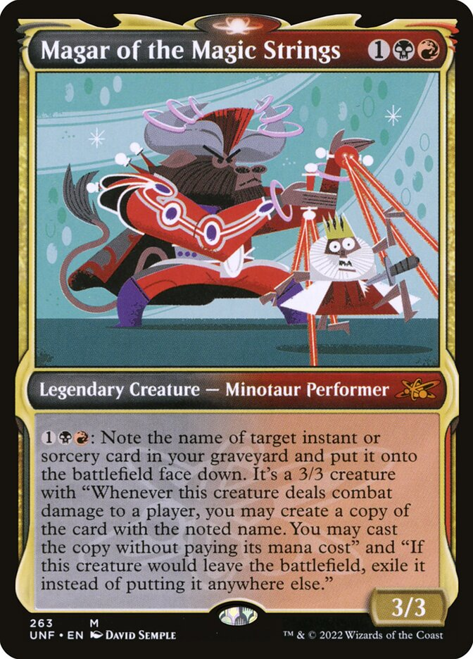
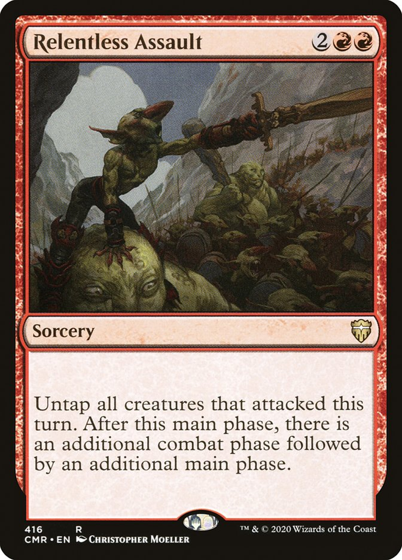
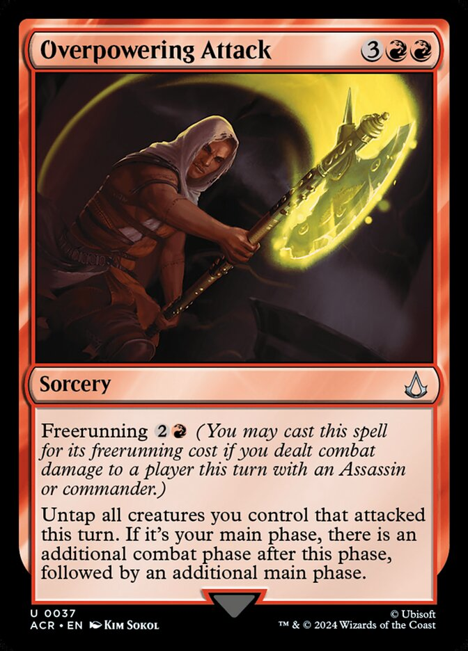
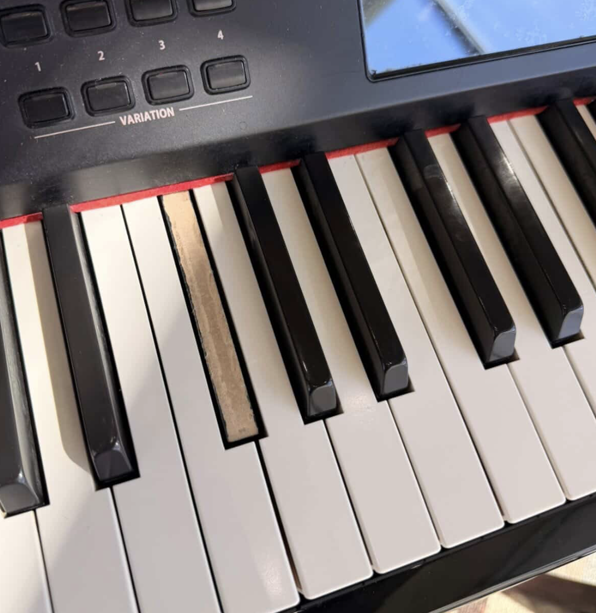
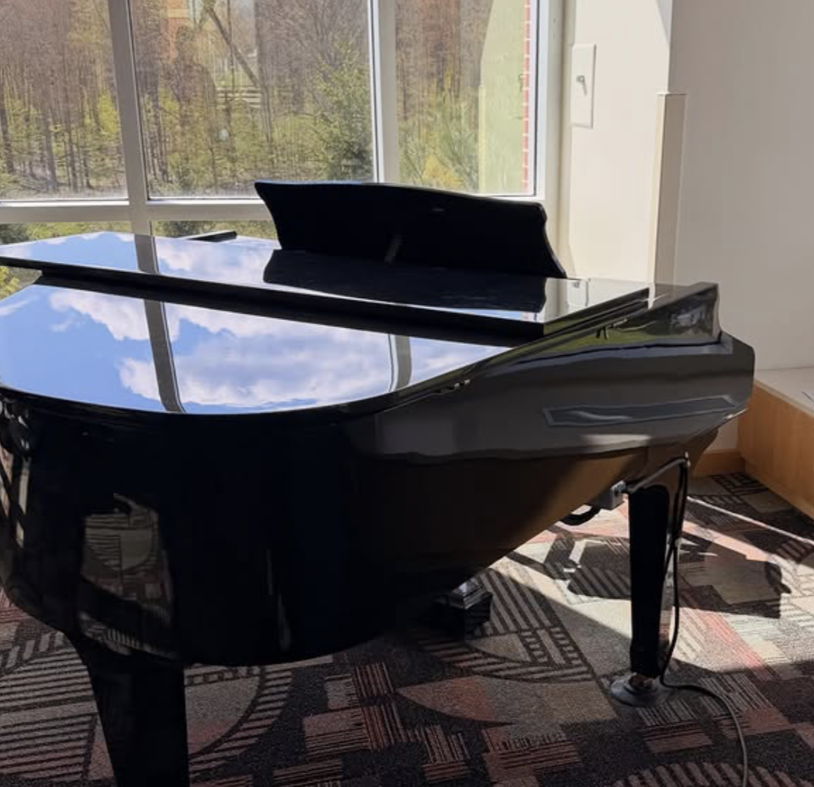
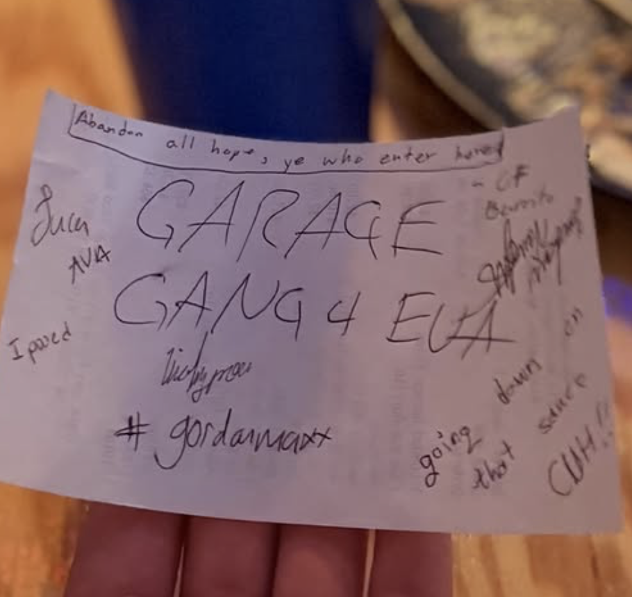

April
Hey! Let’s talk about April, Dearest Readers.
It’s Tuesday?
It is! I originally had this plan to post SUPER late at night for the fun of it, but I (and my falling asleep) decided that I wanted to post today instead. It’s Cinco De Mayo, which would have been Chloe’s 16th Birthday. Happy Sweet 16 anyways, little girl. Miss ‘ya more and more lately.
Before April: The News!

The second promise of the release schedule comes to you this Friday. Stay tuned for Savannah, a song I wrote half of as part of my song a day challenge.
Mental health matters, and a huge reason I’m doing as well as I’m doing now has to do with the counseling I received this time last year. As somebody who's starting it up again: therapy rocks!!! “Savannah” is a thank you song for sure.
April
April was one of the best months I’ve had in a long time. Despite some hard moments, I got to spend a bunch of it with people who matter to me. Alessandro is home, I went to Binghamton to see Gordon (I know that was basically May but shhhh it’s april), and I played music with my awesome band. I released music for the first time in months, am settling into a work schedule I’m comfortable with, and I’m having so much fun with a particular someone wink wink :)

#gordonMaxxing

Speaking of the weekend trip, I had such a good time back at Binghamton. Don’t ask me why that place means a bunch to me, it’s literally a college town in the middle of nowhere. I know I’d hate living somewhere like it, but I also know that the reason I loved it wasn’t for the actual place in itself, hence why I go back there at all!
I hung out with Gordon, Ava, and Whitlock (MY GOATS!), and played a metric f**kton of Magic: The Gathering. I love the new Strixhaven set, the art on the archive pieces are GORGEOUS! I don’t know if this is target audience for this, but I’ll share anyways: Next commander deck is Magar of The Magic Strings. The idea of turning spells into creatures sounds so fun and I have this infinite combat phases idea that I think could work really really well with him:



Besides all the Magic, we saw FETTY WAP in CONCERT??? That was so much fun but like highkey Gordon and I were the only people in the middle getting hype. Like what do you mean you’re at Fetty Wap at Binghamton (THE party school) and you’re not even JUMPING?! Insane to me. Get hype dudes.
Before I left town, I took in the fact that I might not be visiting nearly as often anymore, and it’d probably be the last time I was ever in my old apartment building. I stopped by campus and played my favorite piano in C4 dining hall, which in typical fashion somebody had managed to maim. (fun fact: I recorded the piano for “Table for One” on that piano!)
I played the songs I used to play almost daily there, but made sure to take extra care in ensuring that the last thing I played was Laufey’s “Like the Movies,” just in case I never got to play anything on it again. I’ll upload the ~10 min recording if anybody’s interested in hearing my imperfect but surely sentimental sendoff.


I drove off into the sunset (it was the middle of the day), shed a few tears I’ll admit, and watched as my stupid little college town became smaller and smaller in the distance. I’m not sad. I know I’ll have that life somewhere else sometime soon. It’s already taking shape.
A cover for your troubles:
Last thing for now: a cover! I heard the unreleased(?) Strokes song “I’ll try anything once” recently and I liked it a lot, so while you await new music Friday, here’s something for you to check out!
Talk soon?
That’s all for now, More again Monday, stay tuned for that full review of Night In The Woods! I just started my second playthrough because I want more perspective to give y’all when I review it! :)

L8r! :)
~luca